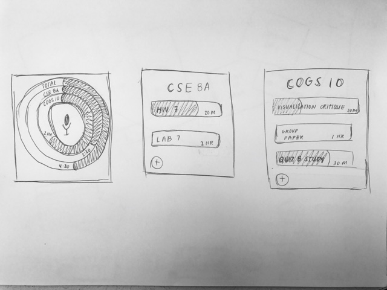
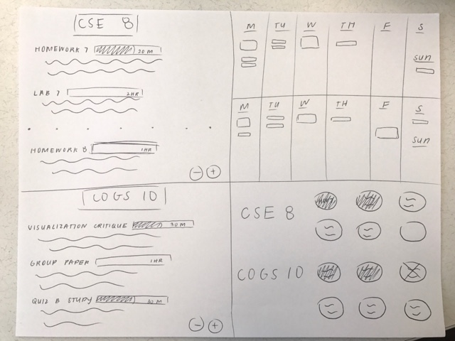
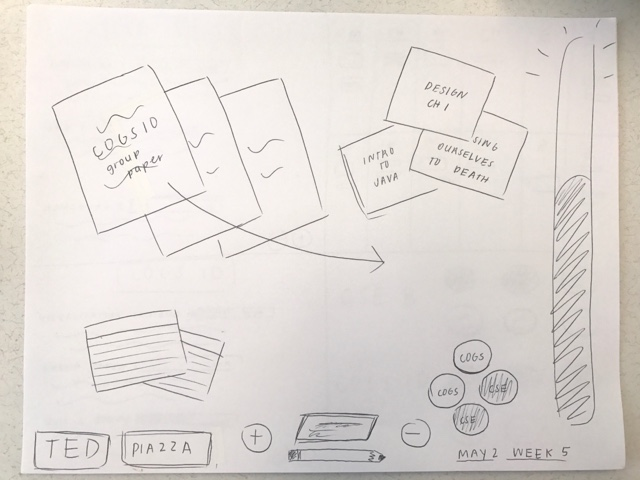

Persona: John is a super senior who wants to keep better track of his assignments and course load because he's found himself becoming more complacent.
Inch: John wants to see an overview of his week and see how much time he needs to devote to his assignments.
Foot: John wants to access all of his assignments without having to flip from Ted to piazza to word docs, etc.
Yard: John wants to see an overview of his next two weeks and be able to see if he has been hitting his goal for the week.
Video:


